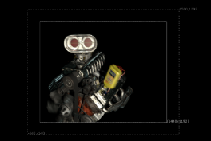
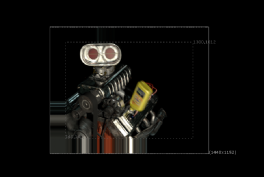
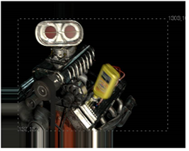

AdjBBox 节点允许您将边界框的边缘展开或裁剪指定数量的像素。
|  |  |
| 展开的边界框。 | 裁剪的边界框。 |
例如，如果您的图像有大量黑色 (0,0，0,0)，您可以调整边界框以仅包含有用的区域，以便 核武器 不会在没有变化的地方浪费时间计算结果。
| 1。 | 选择 变换 > AdjustBBox 在要调整其边界框大小的图像后插入 AdjBBox 节点。 |
| 2. | 将查看器连接到 AdjBBox 节点，这样您就可以看到更改的效果。 |
| 3. | 在 AdjBBox 控件中，调整 添加像素 滑块以增加或减少边界框的大小。默认情况下，25 个像素被添加到边界框的边缘。 |
核武器 展开或裁剪边界框的边缘。如果裁剪了边界框，边界框区域之外的任何东西都会被复制到图像的边缘。

|
|